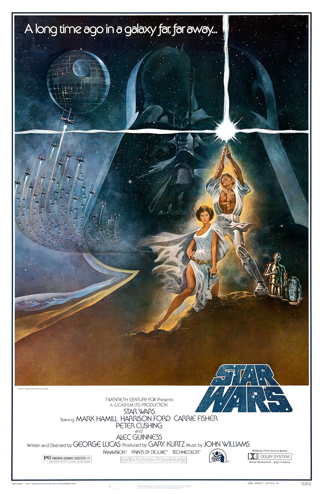

Star Wars
50th Academy Awards
(Oscars 1978)
10 Nominations, 7 Awards*
| Nominations | ||
|---|---|---|
| Category | Nominees | Result |
| Best Picture | Gary Kurtz | Nominated |
| Actor in a Supporting Role | Alec Guinness | Nominated |
| Directing | George Lucas | Nominated |
| Writing (Screenplay Written Directly for the Screen--based on factual material or on story material not previously published or produced) | George Lucas | Nominated |
| Film Editing | Marcia Lucas, Paul Hirsch, and Richard Chew | Won |
| Art Direction | John Barry, Leslie Dilley, Norman Reynolds, and Roger Christian | Won |
| Costume Design | John Mollo | Won |
| Visual Effects | Grant McCune, John Dykstra, John Stears, Richard Edlund, and Robert Blalack | Won |
| Sound | Bob Minkler, Derek Ball, Don MacDougall, and Ray West | Won |
| Music (Original Score) | John Williams | Won |
| Special Achievement Award | Benjamin Burtt, Jr. | Won |